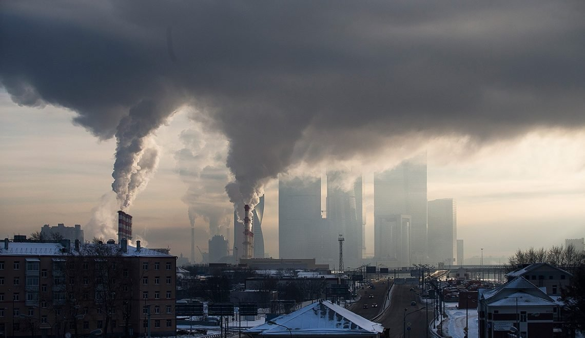

Достижения
1. Казахстан входит в число самых безопасных стран в рейтинге ядерной безопасности. Этому способствовал указ Первого Президента о закрытии Семипалатинского ядерного полигона 29 августа 1991 года. 29 августа 1949 года на полигоне было проведено первое испытание. Спустя больше 40 лет именно в этот день вышел указ о закрытии полигона. За это время было произведено 500 взрывов, которые нанесли урон здоровью и жизни тысяч людей.
2. В 1995 году по инициативе Елбасы Нурсултана Назарбаева создана Ассамблея народа Казахстана. Ее цель – обеспечение общественно-политического согласия в стране.
3. Одним из главных успехов Казахстана является строительство столицы – города Нур-Султан. За небольшой срок появился современный город, который стал визитной карточкой страны. Уже в 1999 году столица Казахстана добилась мирового признания. Город был удостоен награды ЮНЕСКО «Город мира». Эта награда присваивается новым городам планеты, которые за короткий срок достигли больших результатов в социально-экономическом, политическом и культурном развитии.

4. За период Независимости республика стала участником авторитетных и влиятельных международных организаций. Среди них ООН, ОБСЕ, ОИС, ШОС, СНГ, ЕАЭС, ЕЭП, ОДКБ, ОЭСР. Казахстан стал первой страной Центрально-Азиатского региона, где прошел саммит ОБСЕ после десятилетнего перерыва. Его проведение укрепило авторитет страны и Первого Президента на международной арене. Также в столице Казахстана ежегодно проводятся съезды лидеров мировых и традиционных религий.
5. Спорту в Казахстане с подачи Первого Президента страны уделяется большое внимание. За 28 лет казахстанские спортсмены завоевали свыше 60 олимпийских наград. Среди успешных казахстанских спортсменов Геннадий Головкин, Дмитрий Баландин, Ельдос Сметов, Илья Ильин, Ольга Рыпакова, Александр Винокуров, Зарина Дияс, Элизабет Турсынбаева и многие другие. Главным спортивным событием страны за период Независимости стало проведение Зимних Азиатских игр в 2011 году. В них приняли участие представители около 30 стран.
Актуальность
Актуальность нашего проекта под названием «Казахстан-национальный мир» показать Вам нашу страну с другой стороны.
Рассказать про историю и становление Казахстана. Про старинные обычаи и традиции народа. Узнать выдающихся личностей и знаменитостей.
Мы покажем Вам живописную природу и уголки нашей страны.
Художников, которые описывали наши края.
Культуру и ценности нашего народа.
Наш проект актуален, потому что тут мы собрали все то, чем мы гордимся!
Мнения
Мы провели опрос, в котором участвовали люди разных возрастов:
Среди отвечающих , в большинстве от 15 – 21 года.
Были заданы следующие вопросы:
Какие лучшие достижения страны вы видите?
>Архитектура
>Проведение ЭКСПО
>Жизнь
>Некоторые учебные заведения
>Современность
>Активность в благоустройстве городов, шмаль подешивела
>Обретение независимости, умение сотрудничать
>Казахстан входит в число самых безопасных стран в рейтинге ядерной безопасности
>Миротворческая деятельность
>Казахстан вошёл в число первых 30 спортивная держав.
>Мир и спокойствие
>Стабильность
>Экспо крутая штука, инфраструктура некоторых городов (Алмата, Астана)
>Туризм и инфраструктура городов
>Изобретения в Казахстане энергосберегающих ламп, позволяющих значительно экономить электроэнергию.
>Ученые из Казахстана создали систему экстренного вызова для космонавтов.
>С территории Казахстана 12 сентября 1959 года запущен аппарат «Луна-2», который впервые в мире достиг лунной поверхности.
>Никакие
>2017 году Казахстан стал первой страной СНГ, которая провела Международную специализированную выставку ЭКСПО. Ко дню победы в Казахстане ветераном были самые большие выплаты ( в 2021 году)
>Приобретение независимости, ЭКСПО2017
>Казахстан входит в число самых безопасных стран в рейтинге ядерной безопасности.
>За период Независимости республика стала участником авторитетных и влиятельных международных организаций
>В 2017 году Казахстан стал первой страной СНГ, которая провела Международную специализированную выставку ЭКСПО.
>За период Независимости Казахстан привлек более 300 миллиардов долларов иностранных инвестиций.
>Выдающихся успехов нет
>Я считаю, что сфера туризма на данный момент динамически развивается, что способствует развитию внутренней экономики страны
>Развитая черная и цветная металлургия
>Зелёная экономика
>Направленность на улучшения в системе образования
>Приостановление функционирования полигона в Семипалатинске
>Цифровизация
Какие проблемы сегодня особенно актуальны?
>Экономика слабая
>Загрязнение воздуха
>Дороги хочется и стипуху больше
>Экология, политика, деньги, помощь народу
>Зарплаты
>Проблема Экологий по всей стране
>Не умение правильно распоряжаться ресурсами
>Окружающая среда Казахстана испытывает серьёзные экологические проблемы, а это радиоактивные загрязнения в связи с проведением ядерных испытаний
>Расизм, много приверженцев старых традиций, бедность, отсутствие должной медицины, отсутствие перспектив
>Коррупция, отсутствие демократических институтов
>Коррупция, не качественная работа гос. Институтов(медицина, образование, правоохранительные органы, суд), деградирующая сфера туризма.
>Экологические проблемы и нестабильная экономическая ситуация
>Экологическая обстановка ,Зависимость от России ,Авторитаризм
>Работа
>Низкие пенсии , на данный момент минимальная солидарная пенсия в Казахстане составляет 40 441 тенге.(94,71 долларов США)
>Загрязнение воздуха, высыхания каспийского моря
>Маленькие пенсии ,а молодёжь страдает от семейно-бытового насилия.
>Образовательная программа слишком сложна для обучения детей, дети буквально не справляются. А власти же делают только еще сложнее ее.
>социальное неравенство, кумовство во власти, коррупция
>В данный момент, актуальна проблема сокращения рабочих мест на рынке труда
>Загрязнение окружающей среды
>Коррупция, лечение в больницах
>Безработица, трудности с трудоустройством выпускников вузов, экономические проблемы, ситуация с ковид
>Экономика, социальное право, гендерное неравенство, ИЧР, ВВП, ВНП
>Курс тенге, завышенные цены
>Коррупция, преступность
Что нужно сделать, с вашей точки зрения, для дальнейшего развития страны?
>Избавление от корупции
>Обновить промышленные сооружения
>Повысить зарплаты, ибо молодежь деградирует в тикток и инстаграм
>Поменять власть
>Больше возможностей для молодежи
>Устранить Кумовство и коррупцию в власти, дать народу права выбора
>Не знаю
>Уменьшить риски для мировой экономики и заложить основы для стабильного источника экономического роста ,необходимо безотлагательно конкретные политические меры не допускать роста кратковременных рисков связанных с финансовыми трудностями, устойчивое производство.
>Выстроить новый экономический план, поддерживать оба языка в стране (каз и русс), не строить только столицу, обратить внимание на развитие сельхоз продукции на западе
>Провести честные выборы, бороться с коррупцией
>В идеале: искоренить коррупцию. А если реалистично: наладить работу гос. Институтов: выделять больше денег на медицину и образование. Ужесточить наказание за взятки в гос органах. Сделать честный суд.
>Поднимать экономику, продвигать экопросвещение
>Развития общественных движений , Независимое развитие страны , развитие движений защищающих экологию на подобие экологического общество «Зеленое спасение»
>Новое правительство
>Развитие экономики , создания уже готовой продукции преимущественно на территории Казахстана и ее экспорт
>Заняться самыми актуальными на сегодняшний день проблемами. И как можно скорее решить их
>Улучшение жизни граждан, учитывая минимум их критерии.
>изменить социально-экономический строй
>Я считаю, что каждому гражданину необходимо быть образованным
>Не вредить окружающей среде
>Вкладывать бюджет в актуальные проблемы
>Делать упор на молодёжь, образование, различные международные программы, мотивировать молодые умы
>Реформа
>Увеличение гос грантов, привлечение молодежи
>Быть беспристрастными при выполнении служебных обязанностей
Какие вы знаете волонтерские движения? (общественные молодежные организации, клубы)
>Жас отан
>Благотворительный фонд «Бауыржан»
>Жас Казак
>Волонтёрские клубы колледжей, спортивных секций и ДШИ.
>Не знаю
>Благотворительный фонд «Жакия»
>Клуб Разбитых Сердец, УННВ
>Никаких
>НВС Национальный волонтерской сеть. Была создана в 2010-м году
>Волонтёрский центр "Шанырак"
>Общественный фонд «Лига волонтеров»
>Жас Улан
>Координационный центр добровольцев «Команда SOS»
>никакие
>Не знаю
>Молодежный Альянс “Азан”, общественное объединение “Форум молодежи Казахстана”
>Нуротан
>Республиканское общественное объединение «Ветераны органов Комитета национальной безопасности Республики Казахстан»
>Добровольное общество «Милосердие»
>Фонд добрых дел Алматы
>Красный Полумесяц Казахстана
>Нур Отан
>28 петель, лидер
>Фонд помощи бездомным животным «КотоПес»
>Союз добра
>Благотворительная организация «Клуб добряков»
Вывод:
Люди разных поколений знают историю и интересуются своей страной. Было очень приятно, что большое количество людей много чего знают и откликнулись на наш опрос. Все ответы хорошо дополнены, особенно их предложения для дальнейшего развития страны.
Проблемы
1. Экологическая обстановка. В городах Казахстана основной вклад в загрязнение воздуха вносит автомобильный транспорт. Низкое качество используемого топлива и отсутствие фильтров по очистке выхлопных газов, плохое состояние подвижного состава автохозяйств, увеличение количества автомобилей в городах, приводит к тому, что в атмосферу выбрасывается огромное количество окиси углерода, свинца и др. Власти периодически говорят об изношенности существующих полигонов и переходе на другой, экологически безопасный метод утилизации бытовых отходов.
2. Отношение к животным. Отношение к животным в Казахстане нельзя назвать плохим: оно ужасное! Нет никакой законодательной базы: животного можно убить просто так даже при свидетелях. Максимум, что получит такой человек — небольшой штраф. Жестокие методы, применяемые при отлове и последующем уничтожении бездомных животных, ошеломляют. Собак отстреливают, а то и сжигают живыми. Никаких государственных приютов для бродячих животных не существует. Частные приюты, создаваемые неравнодушными гражданами, никак не поддерживаются государством.
3. Коррупция. Коррупция в Казахстане представляет собой существенную проблему для экономического и политического развития страны. По итогам 2021 года Казахстан в рейтинге занял 121 место в списке из 180 стран.
3. Медицина. Министр здравоохранения Алексей Цой рассказал о проблемах в сфере медицины Казахстана. Самые распространенные — качество услуг и дефицит специалистов. «Несмотря на принимаемые меры, имеются ключевые проблемы. На уровне пациентов это качество предоставляемых услуг, слабая коммуникация, очереди к специалистам, недостаточность объема медицинских услуг, доступ к высокотехнологичным и дорогостоящим услугам, дефицит узких специалистов, необходимость развития медицинских организаций, аптечных пунктов в селах с численностью населения менее 300 человек.

4. Дороги. Автомобильные дороги Казахстана признаны одними из самых худших в мире. Казахстан на «почетном» 108-м месте в числе 138 исследованных стран. Такие данные предоставил Всемирный экономический форум